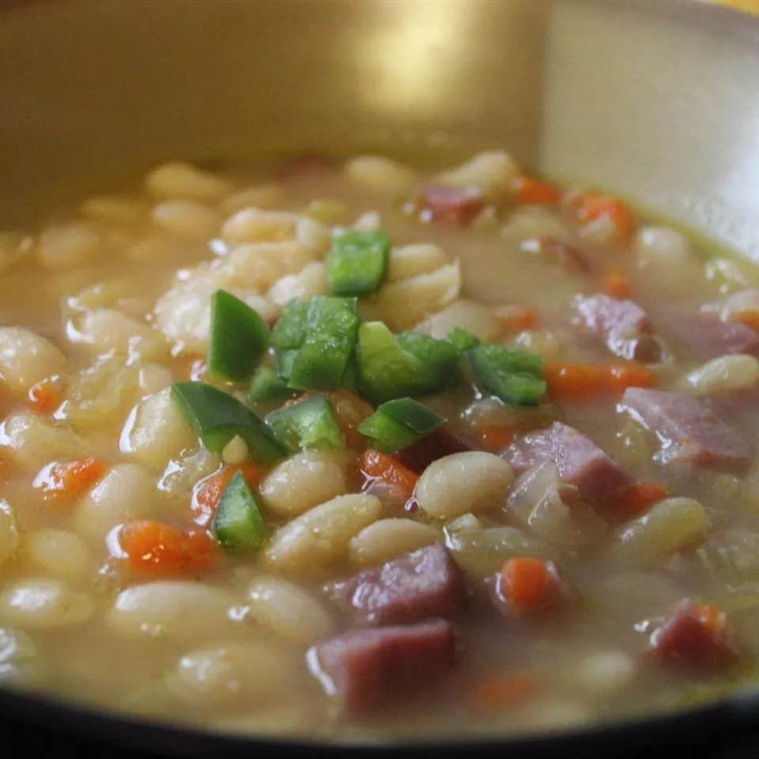

Basic Ham and Bean Soup

Hearty ham and bean soup with lots of vegetables and seasonings. This recipe is easy to make and a great way to use a leftover ham bone. This ham and bean soup recipe is not only delicious, it's the perfect use for leftover meat.
Ingredients
- 8 cups water
- 1 pound dry great northern beans, sorted and rinsed
- ½ teaspoon salt
- 1 cup chopped carrots
- 1 cup chopped onion
- ½ stalk celery, chopped
- 1 teaspoon minced garlic
- 1 teaspoon mustard powder
- 2 bay leaves
- 1 ham hock
- 2 cups chopped ham
- ½ teaspoon ground white pepper, or to taste
Steps
- Place water and beans in a large pot; bring to a boil over high heat. Stir in salt and remove the pot from heat; cover, and let stand for 1 hour.
- Add carrots, onion, celery, garlic, mustard, and bay leaves to the pot with beans; stir well. Add ham hock and bring to a boil; reduce heat to low and simmer for 1 hour.
- Remove ham hock and discard. Stir in chopped ham and simmer for 30 minutes. Season with ground white pepper to taste.